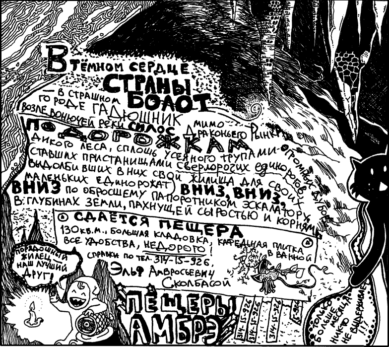
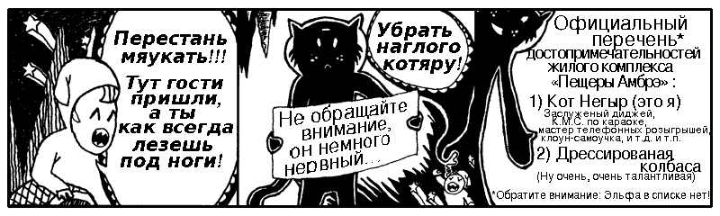
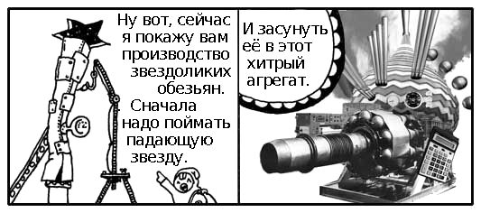
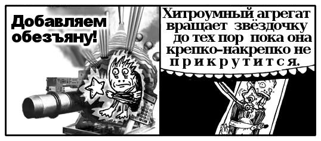
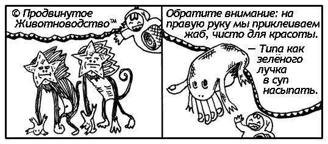
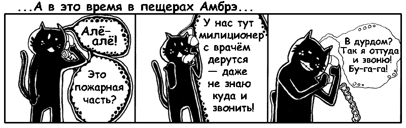
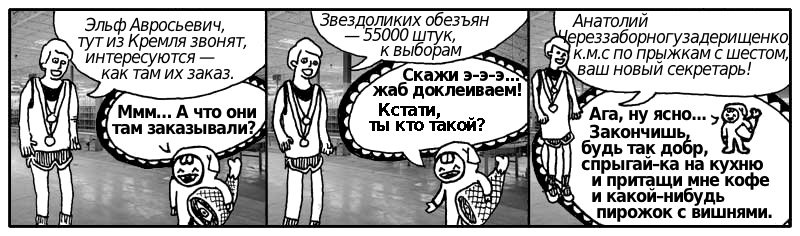

 
Вообще–то, мы как–раз к Эльфу и пришли — пригласить его к нам на урок. (Кстати, первый раз слышу про разумную колбасу — я думал они только на сковородках шкварчать умеют.)
…Девочки, у нас будет посетитель, просьба выглядеть прилично (вот ты, пожалуйста, одень юбку, а не эти ужасные колготы со штрипками!)…
…А теперь, давайте все вместе поздороваемся с Эльфом Амвросьевичем.
Здравствуйте Эльф Амвросьевич!!!
Сразу предупреждаю: этот урок более нудный; наберись терпения. Мы будем проходить самую важную часть Руби — принципы программирования. Я понимаю, тебе хочется поскорее начать писать программы, но без понимания этих принципов выучить Руби невозможно. Зато когда ты их поймешь, всё остальное будет легко и просто, а главное красиво. Руби будет греть тебе душу, как мягкие домашние тапочки.
Эльф Амвросьевич, расскажите пожалуйста нашим ученицам, с какими проблемами столкнулся ваш город, и как введение альтернативной валюты помогло их решить.
Народ не верит в самоцветы
(На самом деле, всё было по–другому. Звонит мне однажды Эльф целый день, звонит и звонит, а я трубку не беру. Тогда он начинает слать кучи СМСок, типа: «Срочно перезвони!!!!!» и «Усатые скупают листву» и «Скидывай камни!!!!» и всё такое. Тут мне и пришла в голову идея: если народ верит в листики, почему бы их не легализовать?)
После короткого периода паники, курс обмена начал стабилизироваться. Сейчас за один шелковичный листик дают пять болотных самоцветов. Т.е. ситуация на валютном рынке выглядит так:
samocvet = 1
listik = 5Конечно, для четвертой главы этот пример совсем уж детский, но это только начало. Мы присваиваем значения двум переменным. Знак равенства — это операция присваивания, или установки.
После установки значения, переменная listik обрела смысл. Теперь она представляет число 5, т.е. пять голубых самоцветов. И вот эта простая операция, мои дорогие, и есть главный принцип Руби! Мы создаём вещи, и наделяем их смыслом. Присваивание переменных — это создание элементарных кирпичиков смысла. Всё остальное — дело техники.
Ну а что касается Эльфа, ему жаловаться не приходится. Он открыл самые первые в Гадюшнике пункты обмена валют, и прилично заработал. (И хотя для нас он маленький гномик, для жителей Страны Болот — он страшный великан!)
Лаборатория электронных имплантантов
Не–не–не–не–не–не! Не надо ей такое видеть. Она растроится, подумает, что это противоестественно, негуманно, грязно, извращённо и так далее, правда, птичечка?
Давным–давно, ещё до ютьюба, была у меня моя собственная скаковая лошадь. Однажды во время скачек она споткнулась, перекувыркнулась раз десять и врезалась в грузчика с ящиком майонеза. Весь ипподром был залит смесью крови с майонезом.
Ветеринар сразу сказал — лошади хана, ходить не будет, лучше сразу усыпить. Все четыре ноги переломаны, не оставлять же безногую лошадь. Ну что она будет, сидеть всё время, или ездить на инвалидном кресле? Ветеринар клялся сердцем матери, что ничего нельзя сделать. Мнения разделились: большинство людей ему верили — всё–таки профессионал — но некоторые были слишком упертые и не хотели сдаваться. "Некоторых" было немного — я да Эльф Сколбасой.
И пока остальные закупали венки и медали на похороны моего коня, мы с Эльфом упорно рылись в интернете, и в конце концов нашли выход. Мы взяли живых раков и вживили их коню в культи. Получилось офигенно! У нас снова была лошадь, вернее, лошадинное тело на членистоногой платформе. Она прожила много счастливых лет, тихо ползая во влажной темноте пещер.
Через несколько лет, Эльф основал фирму "Продвинутое Животноводство". Теперь это ведущая в Стране Болот лаборатория по вживлению животным электронных и биологических имплантантов. Они делают новых зверей и разбирают старых на запчасти. Конечно, многое поменялось со времён той первой лошади. В начале, помню, заходит в лабораторию медведь — выходит медведь в тёмных очках. Полная фигня.
Но прошло несколько лет, и вот, заходит в лабораторию краб — выходит краб с собственным ракетным ранцем. Называется «Джеткраб», модель 2004–го года.
И хотя этот бизнес несовсем легальный, сегодня он процветает. Лаборатория в прекрасном состоянии, всё чистое, всё сияет. У всех работников есть оружие, для обороны — вдруг кто–то зайдёт без приглашения, например пожарная инспекция, или налоговая. А если закончатся пули, у них есть приказ — бить пистолетами по башке.
Ну что ж, я думаю теперь мы готовы к демонстрации. Показывайте, Эльф Амвросьич. 
Перевожу на Руби:
pipe.catch_star
# | |
# труба.слови_звездуВсё как обычно: переменная pipe, метод catch_star. Кстати, мы, Рубисты, иногда говорим не «вызвать метод объекта А», а «послать сообщение объекту А». Слева от точки — объект–получатель, справа — сообщение. Т.е. мы как–бы шлём трубе приказ, в котором написано: «слови нам звёздочку».
В предыдущем примере (с листиками), мы создавали вещи и наделяли их смыслом. В этом примере, мы заставляем вещи действовать. На этих двух принципах и строится весь Руби:
Идём дальше. Допустим, наша программа сработала, и труба подхватила падающую звёздочку. Куда она потом девается?
star = pipe.catch_starКак видишь, если на выходе из метода получается какой–то полезный результат, то его можно (но необязательно) положить в переменную. В данном примере, если под трубу не подставить коробочку, то бедненькая звёздочка упадёт на пол и исчезнет.
(Спрашивается, зачем вызывать метод если тебе не нужен результат? Правильно, умный человек так делать не станет — переводняк!) 
Всё готово, не будем терять время:
starmonkey = aggregate.attach( star, monkey )
# | | | |
# агрегат.прикрепи(звезда,обезьяна)Объект агрегат получает сообщение прикрепи. Как он узнает, что к чему прикреплять? — Это указано в параметрах: star и monkey. На выходе получаем звездоликую обезьяну и сохраняем её в переменной starmonkey. 
Получается вот такая маленькая програмулечка, всего на две строчечки:
star = pipe.catch_star
starmonkey = aggregate.attach(star, monkey) + frog
# |
# лягушкаМожно даже переписать в одну строчку:
starmonkey = aggregate.attach( pipe.catch_star, monkey ) + frogВидишь куда мы переставили pipe.catch_star? Получается, мы подключили выход метода catch_star прямо на вход метода attach, без промежуточной переменной. Теперь звёздочка выпадет из трубы прямо в агрегат. Сэкономили коробочку.

Честно говоря, квартиры в «Пещерах Амбрэ» довольно хреновые. Потолки низкие, лифт где–то метр в высоту. Один чувак загрузил все сумки в лифт, а сам не влез, пришлось ему пешком бежать, пока сумки сами вверх ехали. Но лестница оказалась настолько низкой, что он шишку набил в темноте. Дом–то в свое время для гномов строился.
А еще помню однажды, открываю кран, а воды нет. С досады вырвалось из меня заклинание, мол мать его за ногу, даже умыться на ночь невозможно. Вдруг чувствую, пошло что–то, тёплое и невидимое. На ощупь как вода, а руки сухие остаются.
Всё–таки волшебное это место — Пещеры Амбрэ. Никчемное, но волшебное. Прямо как «nil» в Руби… ;)
nil (от латинского «нигил», как в словах «нигилизм» и «аннигиляция») — это специальное слово в Руби, обозначающее пустоту. Просьба не путать nil и «ноль», потому что ноль это число, а nil это совсем ничто.
nil как зомби: в глазах темно, внутри пусто. Хоть он и ходит, но не может ни думать ни выучить что–нибудь новое. Не смотря на это, nil — очень полезный и встречается много раз в каждой программе. (Почему все любят скелетов? Потому что они всегда улыбаются!)
Например, возьмём пустой пластиковый стаканчик:
stakanchik = nilСтрого говоря, переменная stakanchik содержит какую–то фигню под названием «нил». Но ведь «нил» значит «пустота», получается «стаканчик пустоты», то есть «пустой стаканчик».
Другое похожее понятие, знакомое тем читателям которые программируют на других языках, это «неопределённая переменная». Это когда мы пытаемся прочитать значение переменной, которая никогда раньше не встречалась в программе, и получаем ошибку. Строго говоря, «неопределённая переменная» просто не существует, и у неё нет и не может быть никакого значения — вот Руби и выдаёт ошибку.
В отличие от «неопределённой переменной», наш stakanchik очень даже существует, и у него есть совершенно определённое значение — пустота.
Силуэт кота
А теперь, обратите внимание направо. Это наш кот Чёрный Негыр (фотография сделана ночью со вспышкой). Усы как свеженаглаженые стрелочки, глаза спокойные как озеро, хвост как дым из трубы.
А теперь, обрати внимание на темноту вокруг Негыра. Знаешь, в искусстве есть такое понятие: «негативное пространство»? Мне нравится это выражение. Оно хорошо передаёт ощущение отрицания; в пустоте как–бы чувствуется какой–то негатив. Так и в nilе чувствуется что–то негативное, словно какая–то грустная нотка прорывается сквозь его весёлую песенку.
Всё остальное в Руби насквозь пропитано позитивом. Кажется, Руби родился из какой–то очень хорошей мысли, и она проходит через все объекты, строчки, и регэкспы. И только две вещи мрачно поглядывают из под тёмных капюшонов: nil (англ. «ничто») и false (англ. «неверно»).
Специально чтобы отличать позитив от негатива, в Руби есть оператор if. Пишется он примерно как распространённая форма блока do/end из предыдущей главы, в том смысле что в конце тоже ставится end:
if stakanchik
print "Раз мы сюда попали, значит в стаканчике что–то есть."
end
# если стаканчик
# напечатать "..."
# конецЕсли в stakanchikе находится nil или false, программа перепрыгнет на end и на экране ничего не напишется. Оператор if, это как престижный клуб — негативные элементы не пропускаются в защищённый кусок программы.
Мои бедненькие nil и false, не надо расстраиваться. Специально для вас есть клуб в другом районе, под названием unless. Он, конечно, не такой гламурный как if, зато там нормально относятся к таким как вы. Скажем больше — в нём обслуживают только негативных клиентов! (Которых всего два: nil и false.)
unless stakanchik
print "Раз мы сюда попали, значит в стаканчике ничего нет."
end
# если–не стаканчик
# напечатать "..."
# конецЕсли кусок кода, который надо либо запустить либо пропустить в зависимости от содержимого переменной, влазит на одну строчку, то бывает красивее использовать сокращённый вариант операторов if и unless:
print "Кажется в стаканчике что–то есть." if stakanchik
# напечатать "..." если стаканчик
print "Неа, нифига нету." unless stakanchik
# напечатать "..." если–не стаканчикА ещё, их можно скомбинировать, чтобы сделать что–то только когда «правда что А, но неправда что Б»:
print "В бокале пусто, пьём из стаканчика" if stakanchik unless bokal
# напечатать "..." если стаканчик если–не бокалИногда такая комбинация читается более естественно и больше подходит по смыслу чем другие варианты.


Для тех кто не умеет рисовать, предлагаем два готовых варианта лица:
Стандартное, спокойное.

Жрущее мел.
chelovek = trueСегодня в столовке я встретил true (англ. «верно»). Терпеть его не могу, уж слишком он идеальный. Всегда такой приветливый, спокойный, уверенный в себе. Высокий, мускулистый, зубы ровные, волосы — кучерявые. Стоит прямо, ноги на ширине плеч, смотрит в глаза и улыбается. Того и гляди не сдержится и полетит спасать планету от глобальной катастрофы.
Не люблю людей которые никогда не сомневаются. Они меня нервируют. Только спросишь его что–нибудь, и он сразу: «Давай я тебе помогу». А когда он спрашивает «Как дела?», что мне отвечать?! «Ну, понимаешь, true, у меня такая сложная ситуация…».
И конечно–же у него есть знакомые в клубе if, поэтому он заходит через служебный вход. «Тук–тук, можно к вам?» — «А, это ты, true, заходи!»:
print "Заходи!" if true # эти две строчки...
print "Заходи!" # ...работают одинакогоТолько в особо важных случаях true становится в общую очередь:
if chelovek == true
print "Проходите пожалуйста"
endРавно–равно — это верёвочные барьеры с двух сторон от входа (чтобы толпа с боков не лезла), а true спокойно шагает прямо по красной дорожке — его–то точно пропустят! Задача двойного знака равенства — проверка документов. С одной стороны — посетитель, с другой — фотография в паспорте.
И ты, как хозяйка заведения, устанавливаешь правила — кого пускать, кого не пускать. Если true для тебя слишком слащавый, можно сказать чтобы пускали только false:
if chelovek == false
print "Залазь, фальшивая сволочь"
endОператор unless из предыдущей секции работает точно так же только наоборот — в обоих случаях ты решаешь кого пускать. Ну вот, хозяюшка, теперь ты всё знаешь. Теперь, как говорится, бери и владей.
Хочешь офигительный прикол? Равно–равно — это метод! Представляешь? Его можно вызывать с точкой и скобками, вот так:
chelovek.==( true )И этот метод, как в полной, так и в сокращённой форме, выдаёт результат. А станет ли умный человек вызывать метод и выбрасывать результат? Правильно помнишь, не станет — это переводняк! :^)
if nil.==( true )
print "Эта строчка никогда не напечатается"
endГде в этом примере результат и как он используется? Мы вызываем метод == у объекта nil и передаём ему параметр true. Метод == сравнивает объект с параметром и возвращает результат сравнения. В данном случае nil и true явно не равны, поэтому метод == возвращает false. Этот результат идёт в if, который, как известно, не пропускает false. Поэтому print не вызывается. Всё просто.
Идём дальше. Оператор if тоже выдаёт результат, хотя он, строго говоря, и не метод:
na_rabote = true
email = if na_rabote
"why@hotelambrose.com"
else
"why@gmail.com"
end(Как всегда с примерами, сначала попробуй разобраться сама, а потом читай дальше.) В зависимости от значения переменной na_rabote, оператор if выполнит один из двух кусков кода. Тот кусок который выполнился, пойдёт в качестве результата на выход ifа. В данном случае, мы точно знаем, что переменная na_rabote имеет положительное значение, поэтому из ifа вернётся моё рабочее мыло. Кусок кода между else и end выполнится только если if не сработал (англ. «else» значит «в противном случае»). Если бы значение переменной na_rabote было отрицательным, то в переменную email попал бы мой личный адрес.
Небольшое уточнение: если кусок кода внутри ifа состоит из нескольких действий, то на выход пойдёт результат последнего действия:
email = if na_rabote
address = "why"
address << "@hotelambrose"
address << ".com"
endЧто мы тут видим? Внутри ifа — последовательность из трёх действий. Сначала мы записываем в переменную address моё имя. Потом дописываем домен и «.com». Здесь, меньше–меньше — это операция конкатенации. («Конкатенация» значит сцепление двух строчек.)
Как и операция сравнения ==, операция конкатенации — на самом деле тоже метод. Это задание строчке, сидящей в переменной address: «вот тебе другая строчка, прилепи её себе к хвосту и выдай нам результат». Для пущей наглядности, вызовы метода << можно переписать в полной форме — с точкой и скобками:
email = if na_rabote
address = "why"
address.<<( "@hotelambrose" )
address.<<( ".com" )
endОпять же, у каждого метода есть результат. Первый вызов << выдаст «why@hotelambrose». Обычно, результат нужно записывать в переменную, но в данном случае это делать не обязательно, потому что метод << меняет саму строчку у которой он вызван. Значит, на момент выполнения второго << в переменной address будет уже «why@hotelambrose». Поэтому, второй вызов метода << выдаст полностью готовый адрес. А так как это последнее действие в ifе, то его результат пойдет на выход ifа, и запишется в переменную email. Что и требовалось доказать!
Теперь такой вопрос: что если if не сработал? В смысле, что вернётся из ifа, если код внутри него не выполнился, потому что результат проверки оказался отрицательным? Ничего не вернётся? А что же тогда запишется в переменную? Ничто? Правильно, ничто, то есть nil!
Вообще–то если вдуматься, nil не такая уж бездарная вещь. В некоторых ситуациях он очень выручает. Например, когда нужно запрограммировать три варианта ответа: «да», «нет» и «не знаю»:
print( if na_rabote.nil?
"Понятия не имею, на работе он или нет."
elsif na_rabote == true
"Точно на работе."
elsif na_rabote == false
"Ушёл."
else
"Ничё не понимаю!"
end )Опять–таки, вызов метода это обращение непосредственно к объекту: «Эй, объект, ты случайно не nil?» На этот вопрос все объекты кроме nilа отвечают false, то есть «никак нет, вашбродь!»
А если в переменной na_rabote пустота, значит мы не знаем, на работе я или нет. Получается очень логично — метод nil? выдаст true, и на выход ifа пойдёт «Понятия не имею…».
Дальше, чтобы проверить другие варианты, используется оператор elsif. Если главный if не сработал, Руби будет проверять elsifы один за другим, и если ни один из них не сработает, тогда уже выполнится else. В нашем примере, else выполнится если в переменной na_rabote сидит какая–нибудь неожиданная фигня, например цифра 2:
— Ты на работе?
— 2!
— Ничё не понимаю!Вот такие пироги с котятами…
Ну как, ты ещё не сварилась? Ух какая крепкая попалась! Если ты дошла досюда, значит и всю остальную книгу осилишь без проблем. Кстати, ты молодец — мы уже довольно сложный код разбираем!

Дочитав главу ты удаляешься в спальню, немного поразмыслить над смыслом прочитанного. Твой уютный альков отгорожен занавесочкой и завален подушками. Ты залазишь на кучу подушек и, скрестив ноги, начинаешь созерцать. За окном вздымаются громады заводских труб, изрыгающие в небо спирали жёлтого дыма. По травинкам дорог ползут муравьи вечернего автотранспорта. Город подёргивается как огромный уставший глаз…
Чу! В молоке горизонта тонет яичный желток заката, заливая весь город оттенками заварного крема…
Но вдруг, сквозь всю эту красоту прорываются образы Эльфа и его прыгучего Кандидата в Мастера — они работают над новым заказом. 55 000 звездоликих обезьян! "55 тысяч обезьян!" — думаешь ты. Пятьдесят Пять Тыщ!!!
Ты уже не думаешь про обезьян, тебя привлекает само число 55 000. Оно идет по лесу, или по городу, точно непонятно, потому что твое внимание приковано только к числу. Вот оно останавливается и говорит с людьми… Оно общается с бабушками у подъезда, с пацанами на футбольном поле… Все улыбаются, все довольные… Число развлекает людей шутками, его толстые нолики трясутся от смеха…
Ты тоже хочешь поговорить с ним! Ты хочешь погулять с ним по городу, вместе поговорить с людьми, сесть на поезд, поехать в следующий город, остановиться в гостинице… Ты хочешь выйти за него замуж, родить ему 55 тысяч звездоликих деток… С такой поддержкой можно не боятся о будущем!
Одним прыжком ты слетаешь с подушечной башни прямо за письменный стол: пора действовать! Трясущимися руками ты хватаешь тетрадку и начинаешь строчить:
55 тыс. обезьян — с такой поддержкой можно сделать всё! Захватить Грузию, сравнять с лицом земли и построить луна–парк на всю территорию. Трек для гонок на картингах, казино для вегитарианцев, сеть ресторанов быстрого питания. Главное блюдо — куринные крылышки. Специальный соус: Хрен с кодеином! «Птичечкин звездосоус "Сияющий" — любимая пища звездоликих обезьян». Не забыть запатентовать торговую марку, слоган и логотип… Бизнес–модель: франчайзинг… Инструкция для продавцов: «При необходимости выдать клиенту сдачу, поместите её внутрь жабы на своей правой руке. При отсутствии сдачи, в жабу следует поместить чек». Всё должно быть по правилам: Пиццу продаём дешевле себестоимости, деньги отобъём на напитках… Акция: собери надпись из букв под крышечкой…
Вау, вот это идеи попёрли! Пришлось шлёпнуть себя по лицу, чтобы попустило! Эти злобные планы надо спрятать подальше, а еще лучше зашифровать. Давай так: я начинаю писать шифровальную программу, а ты пока выгляни на улицу — нет ли там слежки.
print "Пиши и не бойся ЦРУ: "
idea_naoborot = gets.reverseИдея простая – пользователь вводит фразу, мы её переворачиваем задом–наперёд. Метод gets (от англ. get string — «получить строчку»), как и print, это ядерный метод. Это значит, что он встроен прямо в Руби, и для его использования не нужно подключать никакую библиотечку. Когда программа доходит до gets, она останавливается и ждёт, пока пользователь что–нибудь напишет и нажмёт «Enter». Как только пользователь нажал «Enter», метод gets перестаёт следить за клавиатурой и выдаёт на выход строчку напечатаную пользователем. Мы получаем эту строчку, и вызываем у неё метод reverse (англ. «повернуть в обратную сторону»). Пока ты этого не знаешь, но метод reverse, это часть класса String. Это значит, что все строчки — экземпляры класса String — умеют разворачиваться задом–наперёд. В следующей главе мы подробно рассмотрим концепцию классов; пока тебе достаточно знать, что многие методы работают только с определёнными типами объектов.
Блин, чё–то мне кажется, reverse не поканает. Достаточно поднести к зеркалу «илмез моцил с ьтянварс и юизурГ ьтитавхаЗ», и всё становится понятно. Не успеют наши звездоликие бойцы прибыть в Цхинвали, как ЦРУ позвонит грузинским пограничникам, и операция будет провалена.
Помойму, это заглавные буквы всё портят. А ну–ка, если мы сделаем все буквы заглавными:
idea_naoborot = gets.upcase.reverseО, вот это уже ништяк.
И вот, ты вручаешь мне общую тетрадь, сплошь исписаную мелким, неразборчивым почерком. На десятой минуте разбирания кракозяблей, я, наконец, начинаю улавливать какие–то закономерности. Одни и те же фразы встречаются снова и снова: «звездоликие обезьяны», «Грузия», «напалм»… «Покажем где лобстеры зимуют» — вот эта фраза о многом говорит…
Давай–ка замаскируем эти не совсем вежливые выражения, дружок. Спрячем их, чтобы излишне пронырливые взгляды не узрели наши деликатные замыслы и не пресекли наши попытки устроить войну и гонки на картингах. Каждому сомнительному слову мы подберём невинную замену. Невинную — но с глубоким скрытым смыслом.
Для начала, давай заведем словарик — а в Руби это значит Hash — и запишем в него эти твои опасные слова. Для каждого опасного слова мы укажем кодовую фразу:
slovarik = {
'звездоликие обезьяны' => "мудаки из 'Единой России'",
'катапульта' => 'доска-качалка', 'напалм' => 'спокойная старость',
'Грузия' => 'Химчистка имени Вахтанга Кикабидзе',
'покажем где лобстеры зимуют' => 'покажем грибные места'
}Штука слева от каждой стрелочки называется «ключевое слово», или просто «ключ», а справа — «значение». Теперь, если кто–то скажет «список пар "ключ–значение"», ты будешь знать, что имеется ввиду.
Кстати, ты заметила, что строчка "мудаки из 'Единой России'" заключена не в обычные одинарные кавычки, а в двойные? Руби распознаёт начало и конец строчек по кавычкам, и если внутрь обычной строчки вставить такие–же точно кавычки как по краям, то Руби запутается и не поймёт, где она заканчивается. (Другой вариант — перед каждой внутренней кавычкой ставить обратную косую черту, вот так: 'мудаки из \'Единой России\''.)
Теперь предположим, у нас есть ключ, и мы хотим найти соответствующее ему значение. Для этого используются квадратные скобки:
print slovarik['катапульта'] # выдаст строчку 'доска-качалка'Квадратные скобки – это, как–бы, деревянный поддон–палета, на котором лежит упакованое в ящик значение. Электропогрузчик поднимает поддон на вилах и везёт его из склада наружу. На каждом поддоне написан индекс, т.е. ключ. Мы говорим водителю погрузчика индекс, он находит соответствующий поддон и привозит нам ящик–значение.
Если ты никогда не была на складе и не знаешь как выглядят поддоны, ничего страшного; сейчас мы придумаем другое сравнение. Например, квадратные скобки — это, понарошку, ручки с двух сторон ящика. Представь — грузчик одевает рабочие рукавицы, берет ящик за ручки и тащит его тебе в машину. Блин, вряд–ли ты встречала ящики с ручками… Чтоб такого еще придумать… Короче ручки, обычные квадратные такие хваталки, ты их сто раз видела. Так всё, проехали, пока башка не лопнула от этих дурацких ручек!
Как и многие другие операции в Руби, квадратные скобки это на самом деле метод:
print slovarik.[]('катапульта') # выдаст строчку 'доска-качалка'Пока ты разбиралась с ручками, я взял и записал наш словарик в файл slovnik.rb.
require 'slovnik'
# 1. запрашиваем замысел и шифруем его
print "Пожалуйста, введите Ваш злой замысел: "
zamisel = gets
print "Ждите, производится шифрование..."
slovarik.each do |slovo, kodovaja_fraza|
zamisel.gsub!( slovo, kodovaja_fraza )
end
# 2. записываем шифровку в файл
print "Шифрование окончено. Введите имя файла для записи: "
file_name = gets.strip
File::open( "zamisel-" + file_name + ".txt", "w" ) do |f|
f << zamisel
endrequire — это очередной ядерный метод, как gets и prints. Он получает на вход название библиотечки и подгружает соответствующий файл (имя должно совпадать). Получается, первой строчкой мы запускаем файл slovnik.rb создающий объект slovarik.
Потом идут две части. Каждая начинается с комментария, отмеченного знаком диез.
(Комменты нужны чтобы помочь археологам будущего разобраться в твоём коде. Ну и тебе самой они пригодятся, чтоб через некоторое время понять, что ты там наворотила. А еще из комментов можно генерить документацию. Для этого есть специальные проги, например RDoc и Ri… Я лично очень радуюсь комментам, когда нужно быстро найти нужное место в огромной программе — не приходится вчитываться в каждую строчку кода.)
Так вот, первая часть получает от юзера строчку, записывает её в переменную zamisel и производит подмену понятий с помощью методов each (англ. «каждый») и gsub! (англ. global substitute — дословно «глобальная подмена»):
slovarik.each do |slovo, kodovaja_fraza|
zamisel.gsub!( slovo, kodovaja_fraza )
endМетод each выполняет блок do—end много раз подряд, по очереди с каждым элементом хэша slovarik. (Кстати, each работает не только с хэшами, а с любыми «групповыми» объектами — массивами, строчками и т.п. Это вообще супер–полезный метод и мы его еще встретим не раз.)
Так как хэш — это список пар «ключ–значение», то каждый его элемент — это пара, в нашем случае опасное слово и соответствующая ему кодовая фраза. То есть, мы по очереди берём каждую пару и вызываем с ней метод gsub!. Метод gsub! ожидает получить на входе два параметра: какое слово искать, и на что его заменять. Т.е. для каждой пары, gsub! пробегает по строчке zamisel, находит все места, где встречается опасное слово, и заменяет его на кодовую фразу.
Теперь такой момент. В других языках программирования результат замены надо записывать в переменную, иначе он потеряется. Обычно когда делают несколько замен подряд, «в цикле», результат записывают назад в ту же самую переменную, примерно так:
slovarik.each do |slovo, kodovaja_fraza|
zamisel = zamisel.gsub( slovo, kodovaja_fraza )
endНо в Руби кроме gsub есть еще метод gsub! — с восклицательным знаком. Его то мы и используем! Он офигенный! Потому что он производит замену прямо внутри строчки zamisel.
Такие методы в Руби называются «деструктивными» — они безвозвратно меняют («уничтожают») старое значение. Обычный gsub тихонечко делает своё маленькое дело и молча выдаёт результат. Его можно записать в другую переменную, при этом первая переменная как была так и останется. А кровожадный gsub! с диким криком бросается на беззащитную строчку и беспощадно убивает её, а вернее уродует до неузнаваемости!
Давай теперь перейдём ко второй части — сбрасыванию зашифрованной строчки в файл.
# 2. записываем шифровку в файл
print "Шифрование окончено. Введите имя файла для записи: "
file_name = gets.strip
File::open( "zamisel-" + file_name + ".txt", "w" ) do |f|
f << zamisel
end